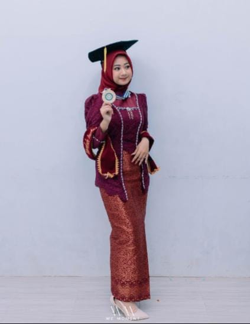

BAJU WISUDA
Baju wisuda untuk penjahit disebut toga. Toga adalah jubah panjang dengan lengan tertutup yang dikenakan saat upacara wisuda. Toga biasanya dipadukan dengan topi mortarboard.
Toga merupakan pakaian formal yang melambangkan pencapaian dan pengakuan. Toga berasal dari jubah yang dikenakan oleh bangsa Etruskan, pribumi Italia yang hidup sejak 1200 SM.
Perlengkapan akademis lain yang dikenakan saat wisuda, di antaranya:
Topi dengan rumbai,
Stola wisuda,
Tali,
Kerudung,
Samir sesuai fakultas,
Slempang cumlaud,
Dasi toga,
Name tag dan nomor urut,